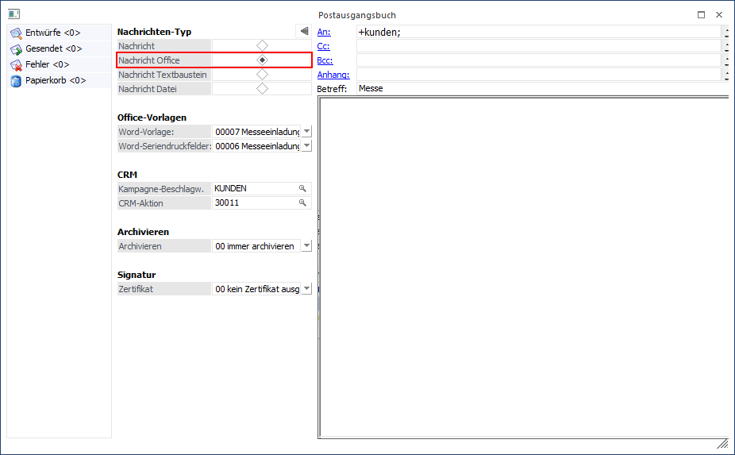
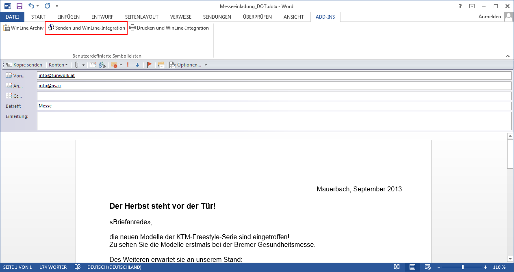
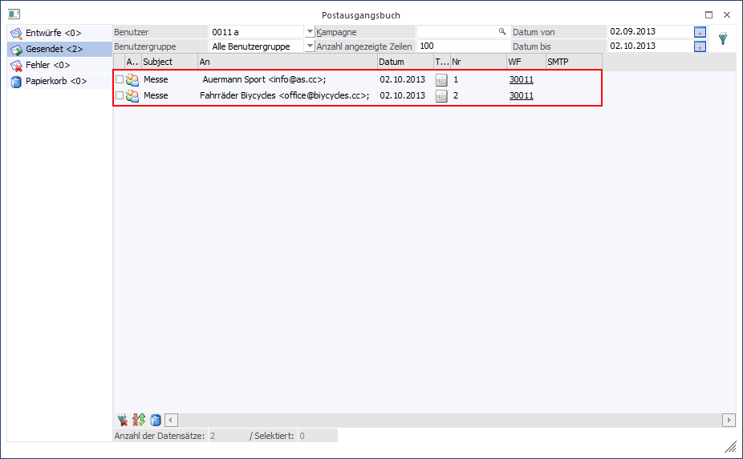

Wenn Serienmails oder Serienbriefe aus dem Postausgangsbuch (per Nachrichten-Typ "Nachricht Office") an Microsoft Office (Word / Outlook) übergeben werden, dann kann über die Add-Ins "Senden und WinLine-Integration" bzw. "Drucken und WinLine-Integration" die Versand- bzw. Druckinformationen an WinLine zurückübergeben werden.
Beispiel
Es wird im Postausgangsbuch eine Serienmail vorbereitet, welche über Office verschickt werden soll.

Nach der Anwahl des Buttons "Senden" in WinLine werden die Daten aufbereitet und an Microsoft Word übergeben. Nachdem dort die E-Mail fertiggestellt wurde kann der Versand (Weitergabe an Microsoft Outlook) mittels Add-In "Senden und WinLine-Integration" gestartet werden.

Die E-Mails werden im Anschluss daran an WinLine zurückübergeben und ggfs. CRM-Aktionen bzw. CRM-Workflows ausgeführt.
